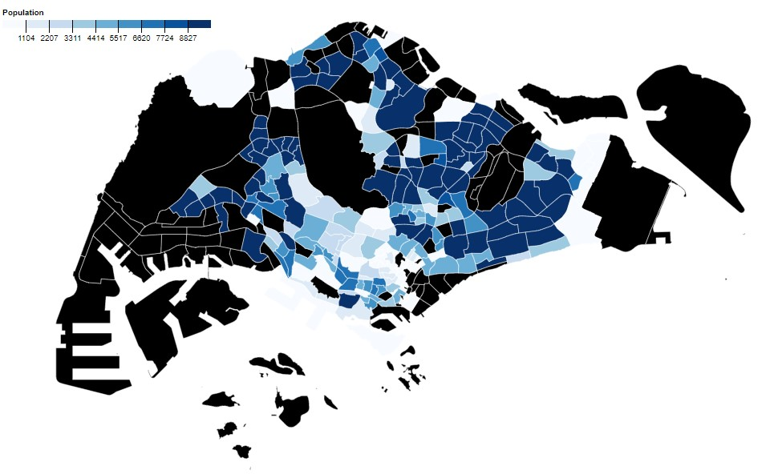

8b: Choropleth Maps
Objectives
- Learn about geo projections in D3.
- Build a simple Singapore choropleth map.
GeoJSON world map
Let's start with a simple HTML template.
We're going to load a basic GeoJSON world map.
<html>
<head>
<style></style>
</head>
<body>
<svg></svg>
<script src="https://d3js.org/d3.v6.min.js"></script>
</body>
</html>
Add in this JS code.
let width = 1000, height = 600;
let svg = d3.select("svg")
.attr("width", width)
.attr("height", height);
// Map and projection
let projection = d3.geoEquirectangular();
let geopath = d3.geoPath().projection(projection);
// Load GeoJSON data
d3.json("https://raw.githubusercontent.com/holtzy/D3-graph-gallery/master/DATA/world.geojson").then(data => {
// Draw the map
svg.append("g")
.attr("id", "countries")
.selectAll("path")
.data(data.features)
.enter()
.append("path")
.attr("d", d => geopath(d))
.attr("fill", "#777")
.attr("stroke", "#fff")
.attr("stroke-width", 0.5);
})
Projections
Add in a simple HTML tooltip.
<div class="tooltip"></div>
.on("mouseover", (event, d) => {
d3.select(".tooltip")
.text(d.properties.name)
.style("position", "absolute")
.style("background", "#fff")
.style("left", (event.pageX) + "px")
.style("top", (event.pageY) + "px");
})
.on("mouseout", (event, d) => {
d3.select(".tooltip")
.text("");
})
Recap exercise
- Can you make move all the styling into CSS classes? E.g. the country path fills, the tool tip, etc.
- Can you make the width and height responsively sized to the screen size? Use the SVG viewBox command.
- On mouseover, can you highlight the path with a colored stroke? E.g. d3.select(event.currentTarget) returns the object.
Projections
The current projection that we're using is equirectangular.
There are many, many projections, and you can find a list in the D3 projections module.
Try something like switching it to orthographic (i.e. globe) or some other projection.
Bl.ocks.org: Projection explorer
Color the oceans
svg.append("path")
.datum({type: "Sphere"})
.attr("id", "ocean")
.attr("d", geopath)
.attr("fill", "lightBlue");
You can define gradients in SVGs. Typically they are under the defs tag. You can of course do this programatically via JS, but you can add this in the SVG tag.
<defs>
<linearGradient id="oceanGradient" x1="0%" y1="0%" x2="100%" y2="0%">
<stop offset="0%" style="stop-color:rgb(0,0,27);stop-opacity:1" />
<stop offset="100%" style="stop-color:rgb(51,122,183);stop-opacity:1" />
</linearGradient>
</defs>
...
.attr("fill", "url(#oceanGradient)");
Projections
Scale, rotate, translate, center
Bl.ocks.org: Projection explorer
d3.geoEquirectangular()
.center([-0.118092, 51.509865]) // London's longitude / latitude;
.scale(500)
Can you center the map to around Singapore and zoom in?
Graticules
A graticule is a network of lines representing meridians and parallels, on which a map or plan can be represented.
let graticule = d3.geoGraticule()
.step([10, 10]);
svg.append("g")
.attr("id", "graticules")
.selectAll("path")
.data([graticule()])
.enter()
.append("path")
.attr("d", d => geopath(d))
.attr("fill", "none")
.attr("stroke", "#aaa")
.attr("stroke-width", 0.2);
Projecting a point
let singapore = [103.851959, 1.290270] // longitude = x, latitude = y
svg.append("circle")
.attr("cx", projection(singapore)[0])
.attr("cy", projection(singapore)[1])
.attr("r", 5)
.attr("fill", "yellow");
Exercise: Cities
// List of cities
var cities = [
{name: "Singapore", longitude: 103.851959, latitude: 1.290270},
{name: "London", longitude: -0.118092, latitude: 51.509865},
{name: "Tokyo", longitude: 139.839478, latitude: 35.652832}
]
Given this list of cities, can you add them to the map as small coloured circles?
Create a SVG group called cities, and put them there.
Animate the map
let time = Date.now();
d3.timer(function() {
let angle = (Date.now() - time) * 0.02;
projection.rotate([angle, 0, 0]);
svg.select("g#countries").selectAll("path")
.attr("d", geopath.projection(projection));
svg.select("g#graticules").selectAll("path")
.attr("d", geopath.projection(projection));
svg.select("g#cities").selectAll("circle")
.attr("cx", d => projection([d.longitude, d.latitude])[0])
.attr("cy", d => projection([d.longitude, d.latitude])[1]);
});
Orthographic projection
In orthographic projection (globe) you can see the cities even when it goes behind the globe. How do we solve this?
Add a test to see whether the point is visible or not:
svg.select("g#cities").selectAll("circle")
.attr("cx", d => projection([d.longitude, d.latitude])[0])
.attr("cy", d => projection([d.longitude, d.latitude])[1])
.attr("visibility", d => {
var point = {type: 'Point', coordinates: [d.longitude, d.latitude]};
if (geopath(point) == null) {
return "hidden";
} else {
return "visible";
}
});
Assignment 3
Geospatial data - D3 visualization
Setup
To be completed before 15-4-2021(Thurs) 1200hrs
- This repo link will be of the format https://<username>.github.io/HASS-assignment3
- In the forked repo create a basic index.html file, and make it visible on GitHub repo pages (it's under the settings tab, under GitHub pages).
- You can put your CSS style tags, HTML and JS script code into one file, or organize them into files/directories.
What: Dataset
- We'll be looking at the Singstat Population Geospatial Timeseries.
- We'll also be looking at the Data.gov Master Plan 2014 Subzone Boundary (Web).
- There is going to be a lot of data manipulation and preperation. I'll walk through this in class.
Why + How: Encoding
A basic choropleth map visualization of the 2020 male population in Singapore subdistricts.
As long as the piece is up with a simple legend, this will be okay. We'll polish this for assignment 4.
Template starter
I've cleaned the dataset on both the GeoJSON data and also the 2020 male population data.
You can code your own version from scratch but I've included a simple template D3 starter.
Questions?
Chi-Loong | V/R